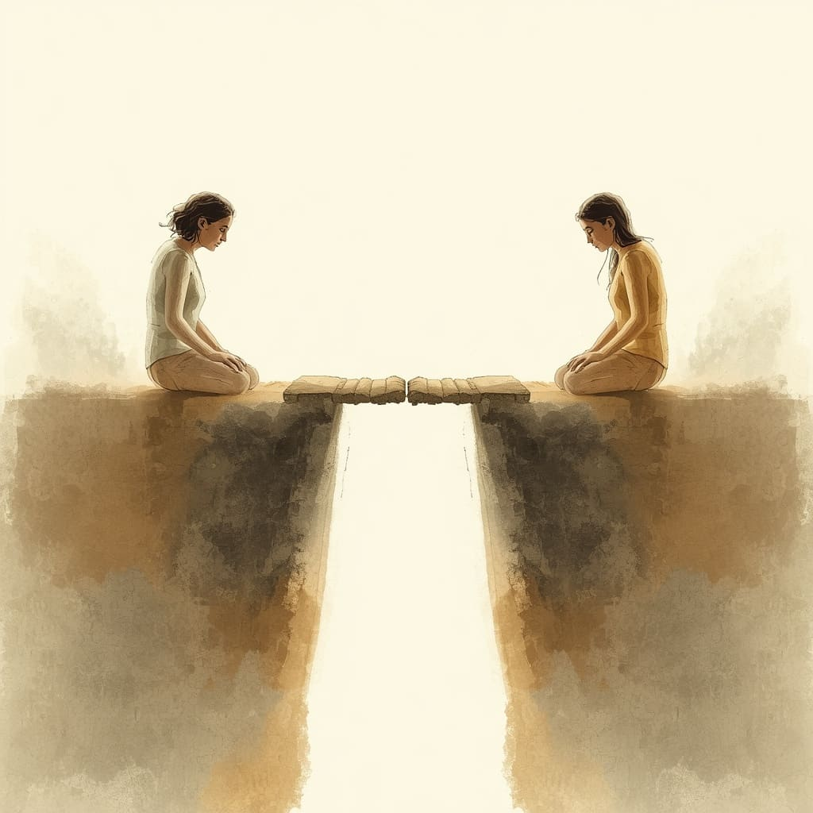
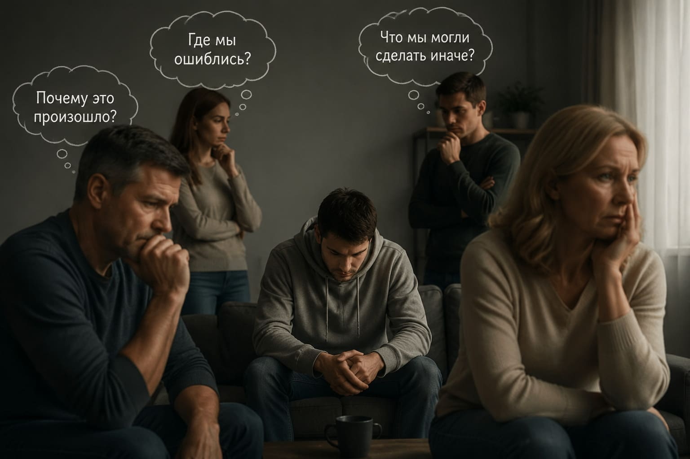

+375 29 784 18 20
|
+375 29 557 86 41
Зависимость влияет не только на самого человека, но и на его близких. Семья часто сталкивается с тревогой, непониманием и сложными вопросами.
Консультации помогают родственникам лучше понять ситуацию, найти способы поддержки и сохранить здоровые отношения.


Родственники часто оказываются в ситуации, когда сложно понять, где заканчивается поддержка и начинается попытка контролировать жизнь другого человека.
На консультациях специалисты помогают близким разобраться в сложных ситуациях, лучше понять происходящее и найти более спокойные способы взаимодействия.
Разобраться в особенностях зависимости и понять, какие действия действительно могут помочь близкому человеку.
Найти способы общения без давления, конфликтов и постоянного контроля ситуации.
Выстроить личные границы и не потерять собственное равновесие, находясь рядом с человеком в сложный период.
В семьях, где есть зависимость, могут формироваться особые модели поведения, которые называют созависимостью.
Понимание этих процессов помогает родственникам лучше осознавать свои реакции, находить поддержку и строить более здоровые отношения.
Специалисты центра помогают семье разобраться в ситуации и найти возможные пути поддержки человека на этапе восстановления.